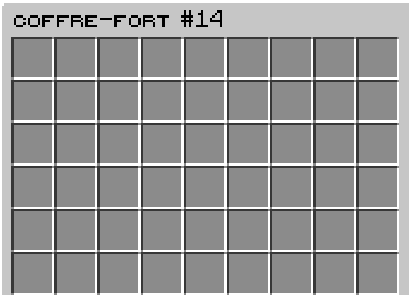
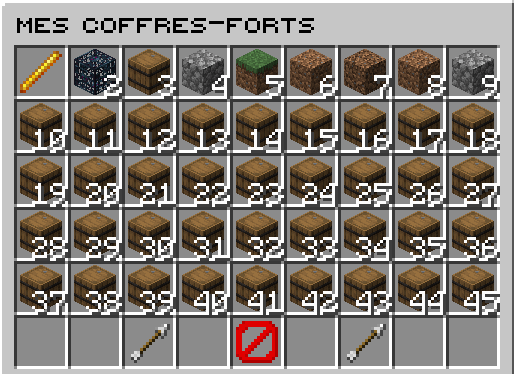
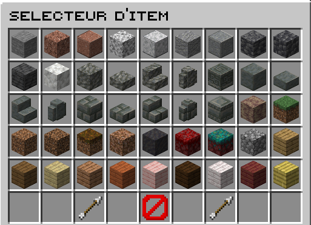
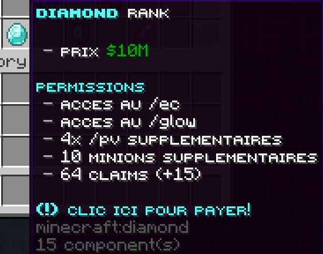

Les coffres forts sont des doubles coffres personnels entièrement sécurisés et accessibles uniquement par leur propriétaire.
Vous pouvez y déposer tous types d’items, qu’ils soient rares, précieux ou destinés au stockage à long terme.
Les objets stackables peuvent être empilés normalement en piles, ce qui permet d’optimiser l’espace et d’organiser efficacement votre inventaire.
Ils représentent une solution idéale pour protéger vos ressources importantes et garder vos biens en sécurité.

Pour gérer vos coffres personnels, plusieurs commandes sont disponibles :
La commande /pv vous permet d’ouvrir directement le menu de vos coffres personnels afin d’accéder à leur contenu.
La commande /pvset [number] vous permet de placer un coffre correspondant au numéro indiqué sur un bloc, afin de le matérialiser dans le monde.
Ces commandes vous offrent une gestion simple et rapide de vos coffres, que ce soit pour consulter votre stockage ou organiser vos espaces de manière plus visuelle.

Avec la commande /pv, vous pouvez ouvrir le menu de vos coffres personnels.
Ensuite, en utilisant Shift + clic sur l’icône correspondante, vous avez la possibilité de modifier l’item affiché à la place du tonneau par défaut.
Cela vous permet de personnaliser l’apparence de votre coffre dans le menu et d’organiser vos espaces de stockage de manière plus claire et intuitive.

Vous pouvez posséder jusqu’à 27 coffres personnels (PV) par défaut, accessibles via la commande /rang.
Cependant, grâce aux rangs payants, il est possible d’augmenter cette limite et de disposer jusqu’à 90 PV, offrant ainsi plus d’espace pour stocker vos items et organiser vos ressources de manière optimale.
Cette fonctionnalité permet aux joueurs de mieux gérer leur inventaire et de bénéficier d’un stockage supplémentaire en fonction de leur progression et de leurs préférences.
